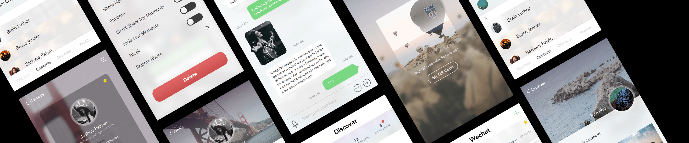
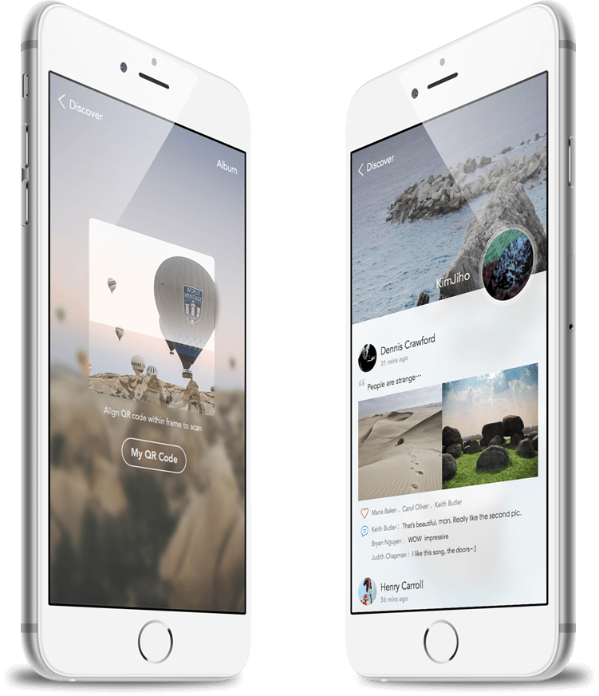

Wechat Concept Redesign
OVERVIEW
从微信提供的有限数据中，我们可以看出它在一线城市的渗透率达到了93%，而且有60%的用户是15-29岁之间的年轻人，所以当我们绘制一个总体的微信用户画像时，他应该是一个充满活力，对新事物有接受能力的年轻人。微信曾经在过去的时间里几次更改界面的设计，比如安卓版微信就是国内最先一批严谨使用安卓设计语言的APP，然而由于微信的整体用户量过大，其中低文化和中老年用户的反馈也不能忽视，所以微信最终统一成了一个较为友好简洁的页面，但从海量的微信重设计作品中就可以发现，不少设计师对目前的微信都有些许不满，我这次重设计微信主要从两个层面考虑，一是希望寻找到一种更为前卫的界面表达模式，像Medium等，从平面的角度反向驱动UI设计，做到视觉上的最大程度轻盈，二是从用户层面，我仅仅考虑了有审美力的年轻人的需求，所以很大程度上这更像一个青年版微信，更为简洁、直接。而在重设计的过程中，我曾想过无数有趣或新颖的交互形式，但经过思考和模拟发现过度的交互只会增加用户负担，最终还是基本遵循了现有的交互，在思考的过程中也感叹微信交互的简化程度。
DESIGN PREVIEW
整体视觉上，我减少了图标和颜色的泛滥使用（这点在目前的UI设计中很明显），由于高分辨率屏幕的普及，人们已经没有过去那种由形态各异的图标进行功能识别的强烈需求，内容才是用户真正需要关注的东西，所以我为我这套重设计定下了几个简单的规范，首先要使用文字，让文字不仅仅是解释说明的载体，而要成为视觉修饰的工具，想想那些优秀的报刊设计，优雅而充满呼吸感的排版可以提升产品的质感，其次是在背景过于单薄的情况下要使用渐变色的图标，让界面变得不至于过度简单，保持整体上的平衡，在选用渐变色时也要选择那些暧昧、柔和的颜色，最后背景要使用模糊的图片，图片都要来自于用户，比如用户的头像或者朋友圈背景图，这样不仅让界面看起来有趣，也在暗示用户选择更漂亮的图片。
FINAL DESIGN MOCK-UPS
正如你所见，我仍然保留了界面底部的TabBar，但减少了它与其它区域之间的边界感，我更倾向于创造一种自由、一体的视觉效果，所有的对话栏的背景都来自于用户的头像，在高度模糊的情况下，即使用户本身头像并不出彩，也能将图片变得高度修饰化，置顶的对话用与其他对话栏的距离区分，而非当前微信中一种近乎于“ 已选中 ”的效果。
在对话界面我去除了目前界面里双方的头像，实际上，由于有对话框方向和颜色的区分，再添加头像是多余的，其次为了强调这是一个子界面，强化了顶部的重量感，而底部的InputBar则与主界面里的TabBar保持高度一致。
在联系人界面里，我首先改变了按首字母快速搜索的样式，目前的界面里将所有字母都罗列出来，很难点击到，最重要的是并不美观，所以我想干脆弱化掉这个功能，用更流畅的滑动式替代，其次将现在顶部的几个功能都罗列到右上角的弹出菜单里，至少对我而言，那几个功能在大多数情况下的用处只有碍眼。
目前微信的个人简介页面简陋而缺少个性化，所以我要做的就是将这个页面变的生动起来，同时让用户相信这真的是属于他们的“个人页面”，我用了卡片式设计承载用户基本信息，而背景则使用模糊后的用户朋友圈图片，想要看这个用户的朋友圈？点开下排的图片栏即可，在这样一个由多层形状叠合起来的页面里进行探索，也许会增强更多的满足感。
个人简介页的右上角有一个设置的按钮，在点击之后即可弹出设置界面，而关闭这个界面的按钮依然在右上角，我希望让这个界面看起来出现的没有那么突兀，在色彩上也要更柔和，所有的选项都像漂浮在云雾上一般。曾经见过许多关于开关按钮的讨论，比如左右哪个代表开，比如开的状态应该用更醒目的颜色还是提示用户关闭的暗色，在电影语言里有这样一条运动规则，即在银幕内，人物从左到右则表示其前途光明，而从右往左则隐喻其即将或正在遇到困难，这自然和大部分文化里的阅读顺序、作业习惯有关，在UI设计中我们也可以借用这条规则。
用户个人朋友圈主页里我着重优化了排版，当前界面的时间显示过大，有用的内容区则太小，所以我缩减了时间的显示区，本想将这里设计成时间轴的形式，但思考过后觉得那属于过度的设计，和整体的风格不符，而且最重要的是在功能上来说那并没必要，做设计要学会减法。
我们都知道朋友圈是微信当前流量最大的一个附加功能，但微信并没有将其单独拿出来作为一个分类，我想很大程度上是因为要由它来带动发现页面里其他功能的点击，所以我也没有将其单独拿出来，而是将它放在一个更显要的位置上，并且增加了未读数和提醒来增强用户的点击欲，而将其他功能作为次一级的选项排列在下，这大概就是设计师以视觉引导用户的作用所在。

朋友圈页面里我改善了图文排版的样式，强化了图片的作用，目前朋友圈的图片缩略图较小，一方面可能是考虑用户移动流量，一方面是为了节省空间，但我认为这些用户自主上传的图文才是朋友圈活力所在。
此外我也略微调整了二维码扫描页面，目前的二维码页面色调过暗，看上去像军用雷达一样，这种设计在初期可能学习成本较低，但略不美观，我将现在的那道绿色的扫描光换成了一个连续的、柔和的白光，当然我这种设计可能的弊端就是减少用户在扫描时的快感。